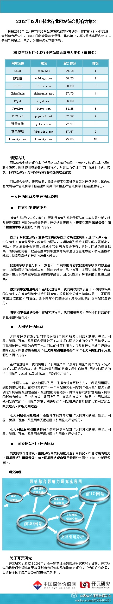

//@CSDN付江:Alexa排名在所有中文网站里第40位左右 作为专注于技术人群的垂直媒体 实属不易 加上拥有全球最大的开发者数据库...一点不意外[呵呵]//@CSDN林象海: //@阿Q蓝小心: 哈哈 为老东家转一个@媒体价值网数据发布:#开元网络与品牌研究#根据2012年12月开元网络与品牌研究最新研究结果，在IT技术行业网站综合影响力评估中，CSDN的综合影响力最强，排名第一，其次是博客园和51CTO分别位居第二、三名。详细排名如下表所示：网页链接 

 网页链接
网页链接